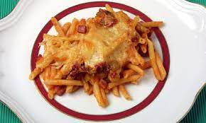

Ingredientes para hacer unos Macarrones
- Macarrones
- Especias
- Oregano
- Pimienta Negra
- Avecrem
- Queso
- Agua

Pasos a seguir
- Hechamos agua en una hoya y la ponemos al fuego hasta que el agua este hirviendo
- Al empezar a hervir hechamos los macarrones hasta que esten blanditos
- Una vez hechados al agua hirviendo se hechan las Especias
(Oregano, Pimienta Negra y Avecrem)
- Cuando comprobemos que los macarrones estan blanditos deberemos colar los macarrones
y tirar el agua
- Pondremos los macarrones en la hoya otra vez y les hecharemos el tomate
- Despues de hechar el tomate hecharemos el queso por encima dejaremos que se
caliente un par de minutos y tendriamos nuestros macarrones listos para servir
- (Tambien a esta receta se lo podria añadir mas cosas como carne picada,
cebolla, zanahorias...)
- (En el caso de añadir algo lo que haria seria cocinarlo a la vez que
hierve la pasta)